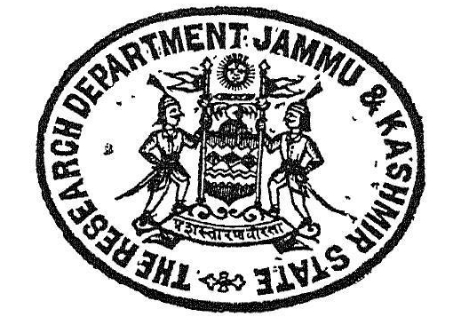

kashmir Series of Texts and Studies.
No. LII.
_______
THE
TANTRALOKA
OF
ABHINAVA-GUPTA.
WITH COMMENTARY
BY
RĀJĀNAKA JAYARATHA
___________
EDITED
BY
PANDIT MADHUSUDAN KAUL SHASTRĪ, m. A., M. o. D.
VIDYĀVĀRIDHI,
Superintendent Research Department,
His Highness' Government
JAMMU & KASHMIR,
SRINAGAR.
Published under the Authority of the Government of
His Highness Rājarājes'vara Mahārājādhirāja
S'ri MAHĀRĀJA HARISINGHJI BAHADUR,
G. C. I. E., K. C. V. O.,
MAHĀRĀJA OF JAMMU AND KASHMIR.
Volume X

BOMBAY:
PRINTED AT THE 'NIRNAYA SAGAR’ PRESS.
1933. A. D.
Hari Parshad Das (HPD)